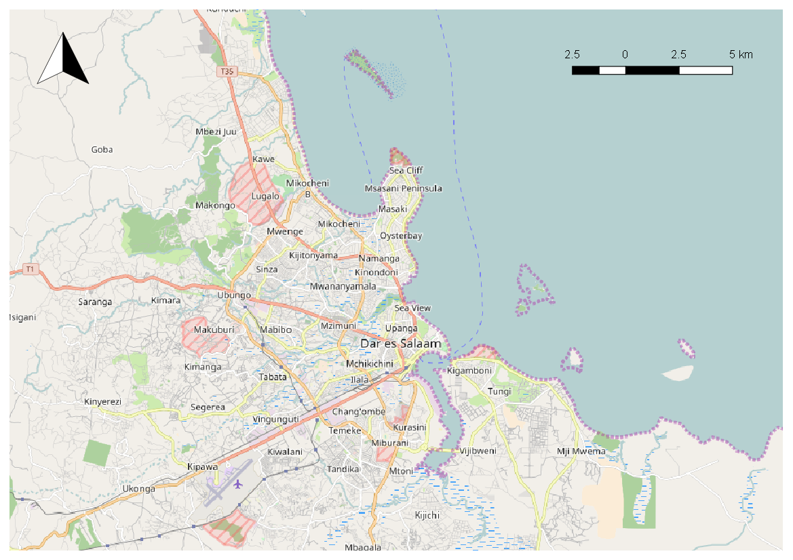
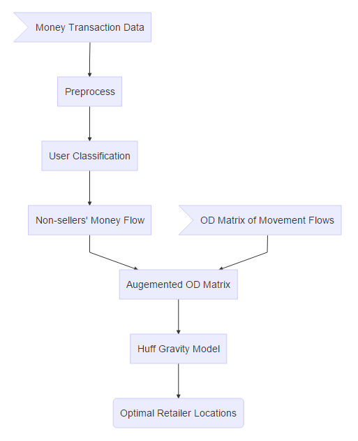
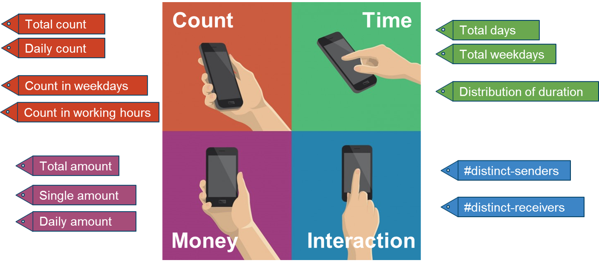
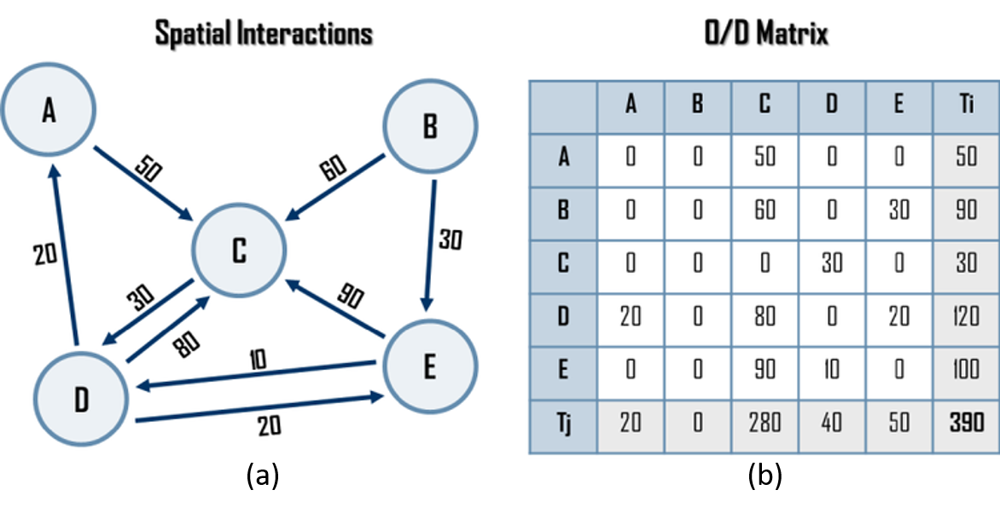
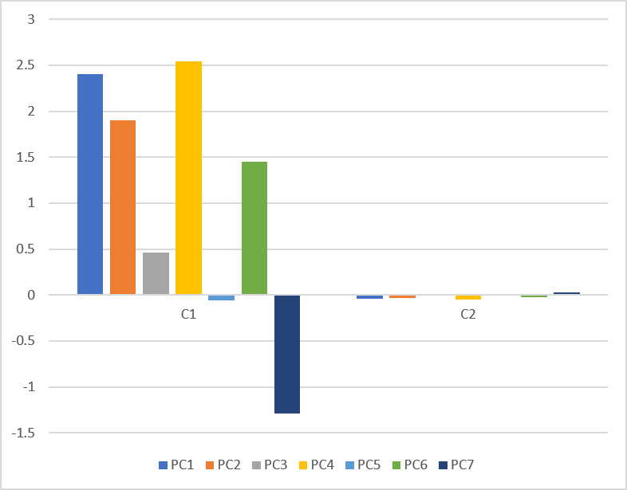
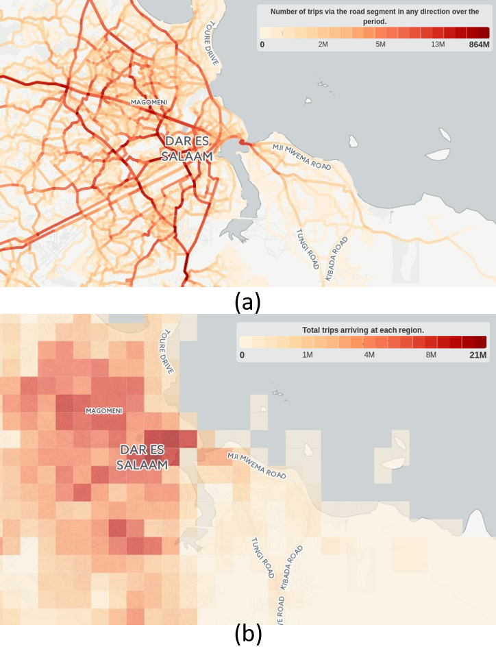

Money flows are the results of economic activities, they are key to understanding economic activities and consumer spending behaviour. Traditional data acquiring way of survey is of high expense and low efficiency, which as a result makes it difficult for governments and companies to acquire related information and enough knowledge, especially for developing countries. However, new opportunities in the study arise with the availability of rapid growing mobile money data.
Mobile money is a money payment system that enables individuals to transfer money using mobile phone technology [1]. It provides an innovative way of banking with many desirable features such as lower costs, shorter transaction time, and ignoring distance, which has transformed the way of banking in developing countries, especially in Africa where traditional banking services are significantly inadequate.
With the development of mobile money systems in developing countries, there are opportunities to capture real-world money flows based on generated data from them. With the large number and individual-level money transaction data, we can have a deeper understanding of economic activities and consumer spending behaviour in developing countries, in turn we can offer advice and help the development of local economy.
Dar es Salaam is a coastal city in Tanzania, Africa which is shown in fig. 1. It has a population of 4,364,541 by 2012 census, and with an area of 1,590.5 km2. Comparing with Greater London, the area is similar while the population is about half that of London (area in London is 1,572 km2 and population is 8,546,761). It is the largest city in Tanzania and east Africa by population. In addition, it is the leading financial centre in Tanzania. The mobile money system has a very high penetrating rate in Tanzania, which makes the study more representative. The official currency is Tanzania shilling (TZS), and 1 GBP is about 2790.38 TZS.

Figure 1: Study area
The data used in the project is mobile phone money transaction records from one of the largest telecommunications operator in Tanzania and has a high market share there. The time span of the data ranges from January 1st to December 31st in 2014.
The data include 727,446 users in total which is a 10% sample of all the users, and contain 48,435,309 mobile transaction records.
For each transaction, there is a sender identifier and a receiver identifier, and the transferred money is from sender to receiver. The transaction happening date and time are also recorded. Detailed data fields description is shown in tbl. 1.
| field name | description |
|---|---|
| sender_id | unique customer identifier |
| receiver_id | unique customer identifier |
| transfer_amount | amount of shillings transacted |
| transfer_date | date of transaction |
| transfer_time | time of transaction |
| transfer_status | successful or not |
| service_type | transaction type |
The general workflow can be divided into three parts. Firstly, users are distinguished as sellers and non-sellers. Then, money flows of non-sellers are integrated with movement flows to generate augmented OD matrix. Finally, Huff gravity model is adopted taking augmented OD matrix as input, and the probability map of consumers’ willingness and ability to shop at certain locations can be generated to help locate retailers. The detailed workflow is illustrated in fig. 2.

Figure 2: Workflow
For the registered mobile money users, there are two major categories of players, i.e. sellers and non-sellers. Sellers play the role of providing banking services and conducting large money transactions, including mobile network operators, financial institutions, and agents, while non-sellers are ordinary consumers who just use the service to improve their lives [3]. In order to understand the spend potential of ordinary consumers from their money flows, we have to separate seller and non-sellers first.
To this end, firstly, four categories of variables were extracted to characterise mobile money users by their money transaction behaviours (see fig. 3). Then, clustering method was undertaken to learn a data driven decision boundary to categorise hard-to-separate users based on extracted characteristic variables.

Figure 3: User money transaction behaviour characteristics
An OD matrix is a matrix that store the information of people’s movement from one place to another, O and D stand for origin and destination respectively. For example, fig. 4 illustrates a case of spatial interaction and corresponding OD matrix. fig. 4(a) shows the number and direction of movement of people between different places, from them we can calculate the OD matrix shown in fig. 4(b).

Figure 4: Illustration of OD matrix. (a) Illustration of spatial movements, (b) Corresponding OD matrix. (Source: Dr. Jean-Paul Rodrigue, Dept. of Global Studies & Geography, Hofstra University, New York, USA.)
As part of the project, there are already existing data of users’ travel flows which indicate a mobile phone user’s travel origin and destination place as well as the start and end time. With these travel data, we can easily acquire movement OD matrix by aggregating origin-destination pairs for certain time periods.
As mentioned above, we can already get the OD matrix for human movement flows in this project. Here our goal is to associate our money flows of non-sellers to the OD matrix so that we can associate movement flow with the information of spending potential. Specifically, we can map a user’s money flows to his movement flows by user identifier and starting time.
Traditionally, when locating potential retailers, we will consider how much people surrounds the certain locations, the intuition is that the more people there are, the more potential the location has. However, there is a problem that people near the location may not be willing to spend their money, and also there is no way to measure their potential spending ability.
However, as we can get the money transaction records of users, we can associate them with their movement, then map them into different locations, so we can measure the spending potential of certain locations. Thus, we can locate retailers not only by the number of people, but also by their potential spending ability.
The general idea is to aggregate money flow matrix by senders and time, then we can create affluent map of our study area, the more affluent a place is, the more likely it can be a good potential site location. Then we take them as input to Huff gravity model.
The Huff gravity model is based on the assumption that the probability which a customer will shop in a particular store grows with the increase of the attractiveness of the shop and decreases with the increase of the distance or travel time from customer, and it is widely used in retail location researches [2]. In the situation of the report, the attractiveness of store will be measured through both travel flows and money flows which can be acquired from augmented OD matrix calculated above.
We extracted 7 components of defined variables using PCA transform. Then, we set the seven extracted components as input, and then got two output clusters, the first cluster C1 accounts for 1.8% (3203 in number) of all the samples while the second cluster C2 includes the rest. The cluster centers of seven input components are shown in fig. 5, and we can see significant differences of component mean values between the two clusters. Moreover, the average Silhouette of our clustering result is 0.7 which indicates that our result is good in general.
In summary, we can learn from clustering results:
The comparatively high transaction count and transfer amount between clusters accords with the known indicators separating sellers and non-sellers and so provides strong evidence that the learned decision boundary semantically indicates such a classification, with C1 representing sellers and C2 representing non-sellers. Furthermore, the proportions of 1.8% (sellers) and 98.2% match (active non-sellers) are in line with expectations from in-country experts, further providing evidence as to the validity of the results. Further validation is planned in future work.

Figure 5: Cluster centers
Because of the complexity and time limitation of the project, the augmentation od OD matrix and the retail location analysis are still been undertaken. However, we can have a quick look at the expected visualisation of augmented OD matrix which is similar to the visualisation of movement OD matrix (shown in fig. 6 which is aggregated by road segments and geographical grids respectively).

Figure 6: Visualisation of existing OD matrix. (a) Aggregated by road segments, (b) Aggregated by geographical grids.
This research has focused on the understanding of mobile money flows to estimate the spending potential and help locate optimal retailers. In summary, there are two major steps of work. Firstly, we has classified mobile money users into two categories, i.e. sellers and non-sellers. This enabled the focus on non-sellers’ money flows to understand consumer spending potential. Then, we have proposed an approach to estimate retailer locations by extending Huff gravity model taking augmented OD matrix as input. However, because of the complexity of the project and the time limitation, the work is still being undertaken. The research has shown the possibility of mobile money in revealing real-world money flows and understanding potential spending of customers. And our continuous work will contribute to the exploration of mobile money data to understand the characteristics of economic activities and customer spending behaviour in developing countries.
[1] Jack, W. and Suri, T. 2011. Mobile Money: The Economics of M-PESA. Technical Report #16721. National Bureau of Economic Research.
[2] Joseph, L. and Kuby, M. 2011. Gravity Modeling and its Impacts on Location Analysis. Foundations of Location Analysis. H.A. Eiselt and V. Marianov, eds. Springer US. 423–443.
[3] Merritt, C. 2011. Mobile money transfer services: The next phase in the evolution of person-to-person payments. Journal of Payments Strategy & Systems. 5, 2 (2011), 143–160.